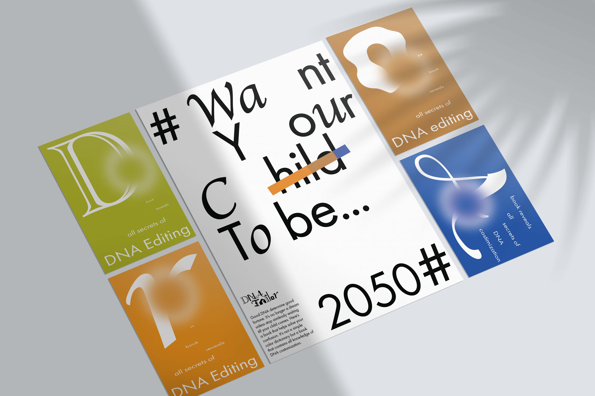

DNA Tailor
Brand Identity
Brand Identity
Yuntong Chen
Graphic Designer based in NYC with a passion for the fields of branding, motions graphics, editorial.
Graphic Designer based in NYC with a passion for the fields of branding, motions graphics, editorial.
Instagram
email
resume
resume
DNA Tailor is a virtual future-predicted brand that sheds light on the negative impact on DNA editing. This new technique helps eliminate potential harmful DNA in the first place but also leads to the question of in what extent the DNA chain is allowed to costomized.